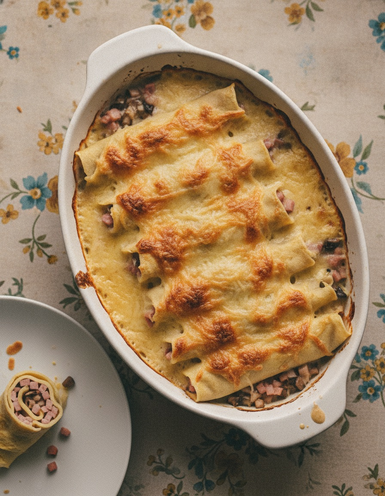

Ficelles picardes
Pour 4 personnes
Crêpes (8)
- 2 œufs
- 25 cl de lait
- 40 g de beurre
- 125 g de farine
Garniture
- 200 g de jambon blanc
- 500 g de champignons de Paris
- 30 cl de lait
- 15 cl de crème liquide
- 100 g de comté râpé
- 50 g de beurre
- 20 g de farine
- 1 pincée de muscade
- Sel, poivre
Étape 1
Crêpes : fondre 20 g de beurre, tamiser la farine, creuser un puits, verser la moitié du lait en fouettant. Ajouter les œufs battus et le beurre, puis le reste de lait. Repos 1 h minimum. Cuire 8 crêpes dans une poêle bien chaude, en beurrant un peu à chaque fois.
Étape 2
Garniture : hacher et faire sauter les champignons 10 min avec 20 g de beurre, saler, poivrer, réserver.
Étape 3
Béchamel : fondre 20 g de beurre, jeter la farine, fouetter, verser le lait en filet. Ajouter crème, sel, poivre, muscade.
Étape 4
Four à 180 °C, plat beurré. Mélanger jambon en lamelles, champignons et la moitié de la béchamel. Étaler sur les crêpes, rouler, ranger dans le plat.
Étape 5
Napper du reste de béchamel, parsemer de comté. Enfourner 20 min environ, jusqu'à gratiner.

Recette d'après : Magazine de cuisine